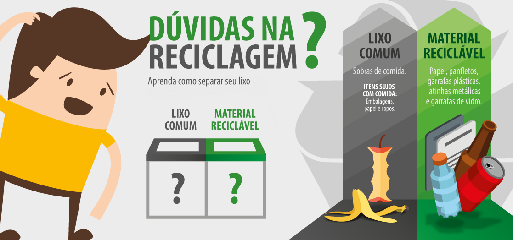

A Importância da Conscientização Ambiental

A conscientização ambiental desempenha um papel crítico na promoção da reciclagem. Quando as pessoas compreendem os impactos negativos do descarte inadequado de resíduos e os benefícios da reciclagem, estão mais inclinadas a adotar práticas sustentáveis. Eis por que a conscientização é crucial:
- Compreensão dos Impactos Ambientais: A conscientização ajuda as pessoas a entenderem como o descarte inadequado de resíduos afeta o meio ambiente. Isso inclui a poluição do ar, da água e do solo, bem como o esgotamento de recursos naturais.
- Redução do Desperdício: Quando as pessoas estão cientes do valor dos materiais recicláveis, são menos propensas a jogá-los no lixo comum. A reciclagem reduz o desperdício, conservando recursos valiosos.
- Promoção da Sustentabilidade: A conscientização sobre o impacto positivo da reciclagem na preservação da biodiversidade, na redução das mudanças climáticas e na proteção dos ecossistemas incentiva as pessoas a adotar práticas sustentáveis.
Como Promover a Conscientização Ambiental na Reciclagem
- Educação nas Escolas: Introduzir a educação ambiental nas escolas é essencial para construir uma base sólida de conscientização. As crianças aprendem sobre a importância da reciclagem e como separar os materiais recicláveis desde cedo.
- Campanhas de Sensibilização: Governos, organizações ambientais e empresas podem realizar campanhas de conscientização que destaquem os benefícios da reciclagem. Isso pode incluir anúncios, eventos comunitários e mídia social.
- Incentivos Financeiros: Oferecer incentivos financeiros, como descontos em taxas de lixo, para famílias e empresas que adotam práticas de reciclagem pode ser uma forma eficaz de promover a conscientização.
- Acesso Fácil à Reciclagem: Garantir que as comunidades tenham acesso fácil a instalações de reciclagem é essencial. Quanto mais conveniente for a reciclagem, mais pessoas a adotarão.
- Exemplo das Empresas: As empresas podem desempenhar um papel crucial na conscientização ambiental. Ao adotar práticas sustentáveis e comunicar seus esforços aos clientes, elas podem influenciar positivamente o comportamento dos consumidores.
O Futuro da Reciclagem
A conscientização ambiental é a chave para o futuro da reciclagem. À medida que mais pessoas, comunidades e empresas adotam práticas sustentáveis, nosso impacto negativo no meio ambiente pode ser reduzido significativamente. A reciclagem não é apenas uma responsabilidade, mas também uma oportunidade para preservar a beleza e a biodiversidade do nosso planeta para as gerações futuras.
Conclusão: A conscientização ambiental desempenha um papel fundamental na promoção da reciclagem. À medida que mais pessoas compreendem os impactos negativos do descarte inadequado de resíduos e os benefícios da reciclagem, estão mais dispostas a adotar práticas sustentáveis. Através da educação, campanhas de conscientização e incentivos, podemos construir um mundo mais limpo e saudável para todos. Cada um de nós tem um papel a desempenhar na conscientização ambiental e na promoção da reciclagem. Juntos, podemos fazer a diferença e proteger o nosso planeta.